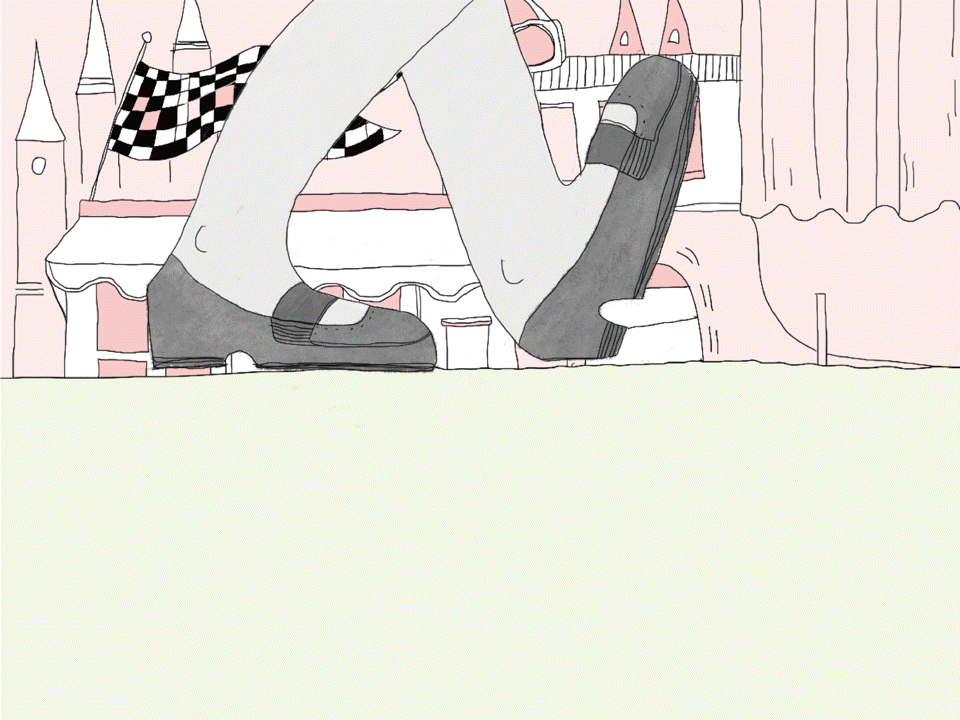

Log Line: "Oh, so am I in a weekly? "
In the movie, all of the main characters are "moving",whether riding bikes, hopping into past era, involing a student protest...and so on.
Hence, I choose four main chracters and focus on their feet, in order not to reveal too much messages in this title sequence,
which is a good preparation before the audience watch the movie.
Characters: The cycling reporter / JKL Berensen who takes us to th past / The girl in the portest / The chief looking for something familiar in the foriegn land
